Refactoring without save
Refactorings don't require all editors to be
saved any more. They can now operate even if Java or text editors still have
unsaved changes. If you don't like unsaved editors after refactorings,
you can still choose to always save modified resources on the
 Java preference page.
Java preference page.
Rename refactoring in editor
The Java Rename refactoring can now be performed directly in the editor, without showing a dialog.
When using Refactor > Rename (Alt+Shift+R) in the Java editor, the editor enters linked mode instead of opening a modal dialog. Changes stay local until Enter is pressed, which will perform the change in the whole workspace.
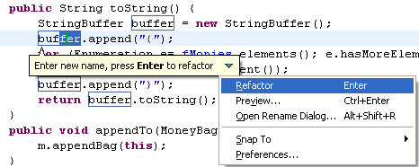
To see and configure refactoring options, press Alt+Shift+R again, or click the menu button and choose Open Rename Dialog....
If you prefer the old modal dialog, you can disable
Rename in editor without dialog on the
Java preference page.
Introduce Parameter Object refactoring
Introduce Parameter Object is a new refactoring that replaces a set of method parameters with a new container object. All calls to the method are updated to pass the new parameter object class.
Use cases:
- group parameters which logically belong together; e.g., Date start, Date end, String newValue, String oldValue
- reduce number of parameters
- provide useful defaults in the parameter object
- pass the parameter down the call chain
To execute the Introduce Parameter Object refactoring, select a method, invoke Refactor > Introduce Parameter Object, select the parameters that should be used as fields, and give meaningful names.
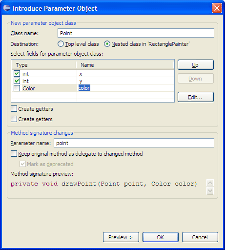
The following code snippet
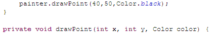
will be modified to
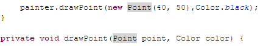
Sort Members on multiple elements
The Sort Members action can now sort multiple elements at once. Select a package, a project, or a set of Java elements in the Package Explorer and invoke Source > Sort Members.
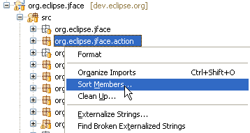
Clean Up profiles
A preference page has replaced the Source > Clean Up wizard. Clean Up profiles can be defined on this preference page. A profile can be attached to the workspace or to individual projects. Project settings can be shared in a team through a version control system. It is also possible to export and import each profile.
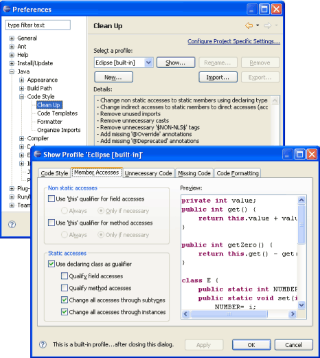
New clean ups
The following Clean Ups have been implemented:
- Format source code: The formatting settings can be configured on the Formatter preference page.
- Remove trailing whitespace: You can choose to remove trailing whitespace on all lines or to ignore empty lines.
- Organize imports: Imports are organized according to the settings for the project or workspace.
- Sort members: You can sort either all members of a compilation unit, or ignore fields, enum constants, and initializers (because sorting such members may result in semantic changes).
Code clean up on save
It is now possible to automatically invoke
code clean up whenever the Java editor is saved.
This feature can be enabled globally on the
Java > Editor > Save Actions preference page.
The save actions can also be configured per project, which
makes it easy to enforce a project-wide standard by sharing
the settings across a team:
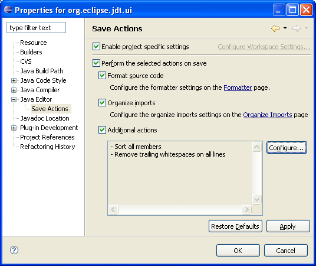
Content assist for favorite static imports
The Content Assistant (Ctrl+Space) can now propose completions
for static members from a list of favorite imports that can be configured
on the
Java > Editor > Content Assist > Favorites preference page.
For example, if you have added java.util.Arrays.* to
this list, then all static methods of this type matching the completion
prefix will be added to the proposals list:
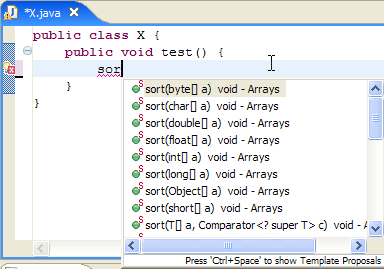
The import preferences from the
Java > Editor > Content Assist
preference page are honored when inserting such a proposal.
Content assist for variable with unresolved type
The Java editor now supports the new member
proposals with unresolved types: depending on the
Java > Editor > Content Assist
> Add import instead of qualified name preference the editor
will either automatically add imports or fully qualify the types for such
proposals.
Pressing ; in the following scenario:
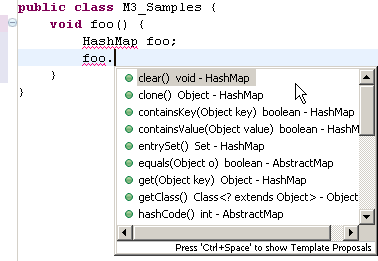
results in:
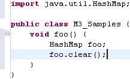
Content assist provides declaration proposals for undefined local variables
Code assist can now infer the name of a declared local variable by detecting the presence of unresolved names in subsequent code, as shown in the example below:
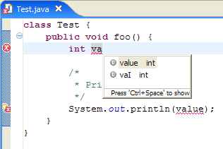
Content assist improvements continued
- Content Assist (Ctrl+Space) inside a try-catch clause can now infer exception type names based on exceptions detected to be thrown in the corresponding try block. These exceptions are now listed before other possible exceptions.
- When completing a name reference, Content Assist now proposes unresolved names found in other parts of the code.
- Code completions in the empty statement now include the local types of the current compilation unit in the list of proposals.
- Code completion after an at sign "
@"proposes all visible annotation types. - Completing in an annotation member proposes all possible attributes which are not already specified.
Quick assists
Functionality that was previously only available in the Refactoring menu is now also offered as quick assists (Ctrl+1). As always, quick assists don't show a dialog, but enter the linked mode where you can change names or types that have been introduced.
- Extract to local variable and Extract to constant: select an expression in the code
- Inline local variable: available on a variable name
- Convert local variable to field: available on a variable name
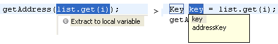 - Convert anonymous to local type: available on the type name of an
anonymous class
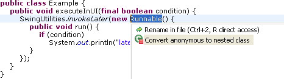
When applied, use the Tab key to navigate through the generated code and to modify the new type name and choose from the offered field and parameter names.
Quick fix to create method from @Override
When you add an @Override annotation to a method that does not override yet, quick fix (Ctrl+1) will offer you to create the method in one of the super types.
Quick fix to create and use getter and setter
A new quick fix is available for a field not accessible due to visibility restrictions. In the following scenario, use Ctrl+1 to invoke quick fix:

If a getter exists for this field, you can choose to use it.
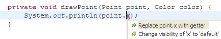
And if there is no getter for this field, you can choose to create one.

Template for adding JUnit 4 test methods
A new Test template has been added to speed up adding JUnit 4 test methods.
Syntax coloring for brackets
Brackets may now be colored separately from operators
in the Java editor via the
Java > Editor > Syntax Coloring
preference page:
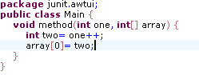
No more "I don't see the full source" questions on the newsgroup
The command group that contains the Show Source
of Selected Element Only tool bar button  is now hidden by default. The setting can be toggled using the
Java > Editor
> Only show the selected Java element preference.
is now hidden by default. The setting can be toggled using the
Java > Editor
> Only show the selected Java element preference.
Configurable Javadoc font
The font for displaying Javadoc is now configurable
on the
General > Appearance > Colors and Fonts
preference page.
The Javadoc display font is used by the Javadoc view and hover, and
for the additional information shown during content assist.
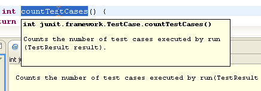
Background color for source hovers
The background color for all hovers that show source in the Java editor
can now be configured on the
Java > Editor
preference page.
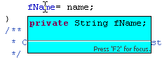
Class file editor shows disassembled code
The Java class file editor now shows the disassembled bytecodes when source code is not available.
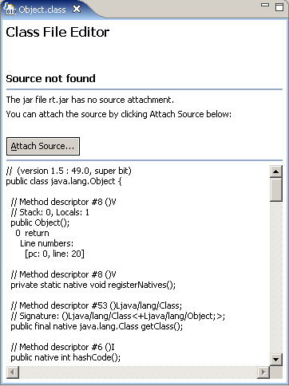
Improved handling of duplicate local variables and types
JDT now does a better job of handling invalid code with duplicate local variables and types; in particular it will minimize secondary errors. This allows the Java tools to perform in offending code, so as to offer quick fixes.
- Local rename (Ctrl+2,R) can now operate even in faulty nested loops,
allowing you to quickly fix the name of the duplicate variable in all
the places it appears.
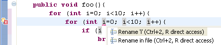
- Method invocation or field access through a duplicate variable now
refers to nearest definition of the local variable, thus reducing the
number of secondary errors reported.
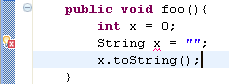
Improved null check detection
The existing Null reference option on the
Java > Compiler > Errors/Warnings
preference page has been split into three options:
- Null reference (in 'Potential programming problems')
When this option is enabled, the compiler will issue an error or warning whenever a variable that is statically known to hold a null value is used to access a field or method, as shown in the example below: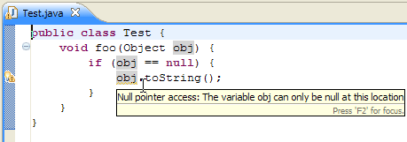
- Potential null reference (in 'Potential programming problems')
When this option is enabled, the compiler will issue an error or a warning whenever a variable is statically known to potentially hold a null value, as shown in the example below: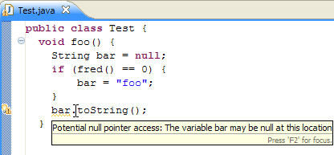
- Redundant null check (in 'Unnecessary code')
When enabled, the compiler will issue an error or a warning whenever a variable that is statically known to hold a null or a non-null value is tested against null, as shown in the examples below:
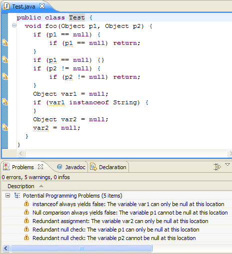
Warning for raw types activated by default
The optional compiler diagnostic for detecting any usage of a raw type is now activated by default.
This diagnosis can be configured on the
Java > Compiler > Errors/Warnings
preference page, using the Generic types > Usage of a raw type preference.
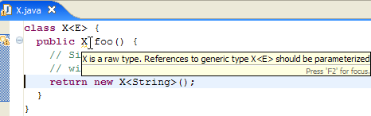
Unused parameter warning enhancement
The Unused Parameter warning was improved with a new option that helps avoiding false positives. You can give the compiler a hint that a parameter is not really unused by commenting it with a @param tag.
The option is located on the
Java > Compiler > Errors/Warnings
preference page in the Unnecessary code section.
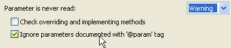
Colored labels in Java views
To enable colored labels in Java views, open the
Java > Appearance
preference page and select Use colors in labels.

Decorations for transient and volatile fields
Transient and volatile fields now have corresponding icon decorations:
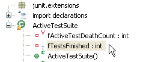
Grouping of JARs and class folders in Package Explorer
The Package Explorer now groups referenced libraries in a new container node.
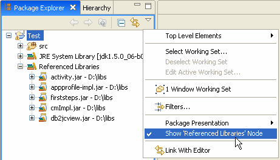
More Java search options
The Java search dialog has been extended to offer finer control to limit the scope to search in sources, required projects, JRE libraries, and application libraries.
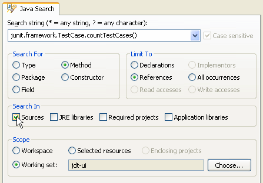
Search filter for references to overridden method
The Java search engine has introduced a new criterion for categorizing method reference matches. It can now distinguish an invocation via a type or one of its subtypes from an invocation via a supertype, which is usually a weaker match. The Search view now includes a filter for further narrowing references to the searched method.
In the following example, the user searched for references to the A.toString() method
and got 3 matches. Since o.toString() denotes an invocation
of a method that is overridden by the search target A.toString(),
it can be filtered out from the Search
view by activating the "References to Overridden" filter as shown below:
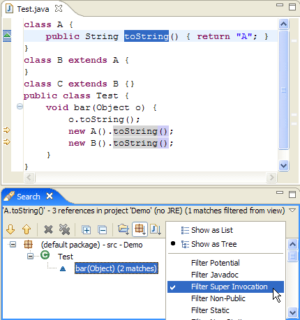
Note: The "References to Overridden" filter is not activated by default.Select execution environment when creating Java project
When you create a Java project that you want to share with a team, it is a good idea to use an execution environment instead of a specific JRE.
Execution environments are symbolic representations of JREs with standardized entries like 'J2SE-1.4', 'J2SE-1.5'. That means no file system path will go into the shared build path.
JREs can be assigned to the environments on the
Java > Installed JREs > Execution Environments preference page.
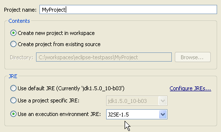
Add new Java project to a working set
The New Java Project wizard got additional input fields to specify the working sets to which the new project gets added. The fields are initialized from the current selection or the active working set filter in the Package Explorer.
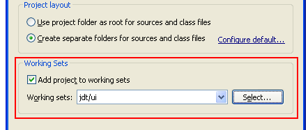
Assign working sets
It's easier now to reorganize Java elements or resources in working sets. To assign an element to a different working set, select the element in the Package Explorer and choose Assign Working Sets... from the context menu.
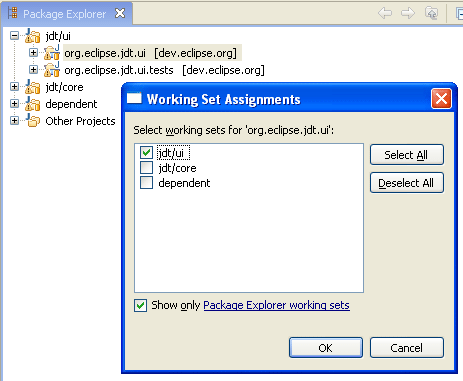
Paste type declaration creates new project
Ever wanted to quickly try out a code snippet somebody sent to you? Copy the snippet to the clipboard, go to the Package Explorer, make sure nothing is selected, and choose Edit > Paste (Ctrl+V).
Eclipse will try to parse the text in the clipboard, and if it looks like contents for a *.java file, it will create a new Java project and create the *.java file.

Like in 3.2, you can, of course, still select an existing project or package as target for the new file.
Enhanced paste in Package Explorer
Pasting Java source text with multiple package declarations to the Package Explorer now automatically creates all the necessary packages and compilation units. The structure on the right is created when you paste the snippet on the left into the Package Explorer while nothing is selected:
package a;
public class Target {
}
//--
package b;
import a.Target;
public class Test {
void reference() {
new Target();
}
}
|
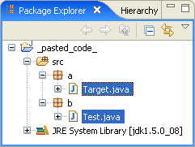 |
Undo deletions in Java Views
Edit > Undo is now also available for deletions of Java elements in Java views. Accidentally deleted packages, compilation units, etc. can easily be restored by pressing Ctrl+Z.
Java drag-and-drop for Project Explorer
Java elements dragged and dropped in the Project Explorer now trigger Java refactoring events (like in the Package Explorer).
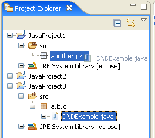
Export and import JUnit test runs
JUnit test runs can now be exported and imported.
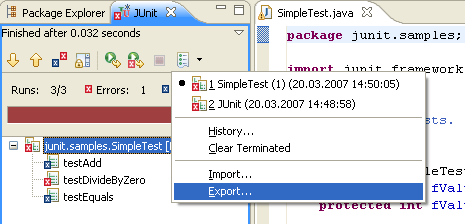
Currently, Eclipse can read its own test run storage XML files, as well as XML files produced by the Ant JUnit task.Open Type opens multiple types
The Open Type dialog (Ctrl+Shift+T) now supports opening multiple editors at once.
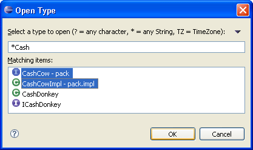
Package and enclosing type pattern search
Patterns with '*' or '?' characters may be specified for packages and enclosing types in the Open Type dialog.
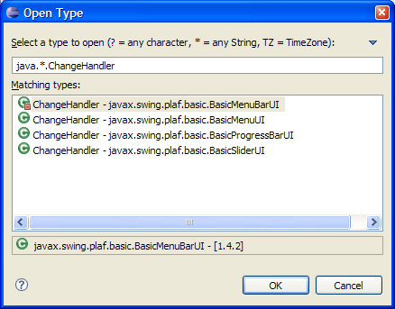
Follow references (Java SE 6 only)
You can display all references to an object (only available when debugging on a Java SE 6 virtual machine). Object references can be displayed in the variables view by toggling the Show References setting in the view menu. References to each object are grouped in a collection.
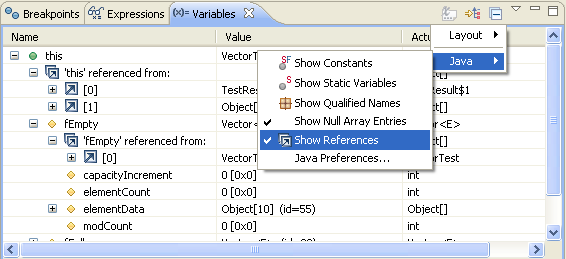
References can also be displayed in a popup dialog by selecting an object in the variables view and choosing All References from the context menu.
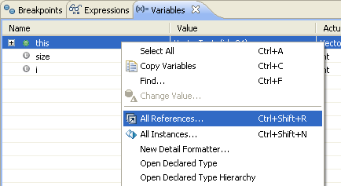
References are displayed in a popup dialog.
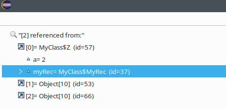
Display instances (Java SE 6 only)
You can display all instances of a Java type (only available when debugging on a Java SE 6 virtual machine). Instances are displayed in a popup dialog by selecting a type in the editor outline, a type name in the Java editor, or a variable in the Variables view and choosing All Instances from the context menu.

Instances are then displayed in a popup dialog.
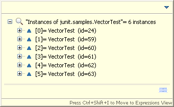
Force return (Java SE 6 only)
You can force an early return from a method (only available when debugging on a Java SE 6 virtual machine). This returns a value from the current stack frame without executing any more instructions in the method and releases any locks obtained by synchronized blocks. A return value is created by selecting an expression and Force Return (Alt+Shift+F). This action is available from the Java editor's context menu, top level Run menu, in the Display view, and in the detail pane of the Variables view.
Forcing an early return from a non-void method requires an expression
to be evaluated. For example, if a method was going to return false
you could return a value of true by selecting an expression in the Display
view and invoking Force Return. In the following example,
elementCount is not equal to zero, and would return false
(see debug hover showing the value of elementCount).

Use the Force Return action from the Display view to return true instead.

Hyperlink stepping
When debugging you can use hyperlinks to step into a method. Use Ctrl+Alt+Click to step into a method (rather than Ctrl+Click which will navigate to the source code).

Double-click and Ctrl+Shift+B for all kinds of breakpoints
Double-clicking in the vertical ruler, or invoking Toggle Breakpoint (Ctrl+Shift+B), now creates an appropriate kind of breakpoint based on the cursor location - line breakpoint, watchpoint, method breakpoint, or class load breakpoint. To create a class load breakpoint, double click on the class declaration line.
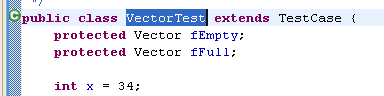
Step through filters vs. step return
You can configure step filters to always return from
a filtered location or step through to a non-filtered location. For
example, if java.util is a filtered location, stepping
into code in HashMap could result in a call-back to your
application code to check the equality of an object. If you choose to
Step through filters a step into would end up in your
application code. However, when the Step through filters
option is disabled, a step into HashMap would behave like
a step over.
Use the Step though filters preferences setting on
the
Java > Debug > Step Filtering
preference page to toggle the feature.
Auto format stack traces
Stack traces can be formatted automatically as you paste them into the Java stack trace console. An Auto Format toggle is available on the console tool bar.
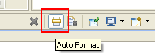
Export logical structures
You can now export and import Java logical structure
preferences separate from other workspace preferences. Java logical
structures are defined on the
Java > Debug > Logical Structures
preference page. Logical structures are used to define alternate presentations
for complex data structures and are displayed when examining objects
in the Variables view. For example, displaying a java.util.Collection
as an array rather than revealing the internal data structure that implements
the collection.
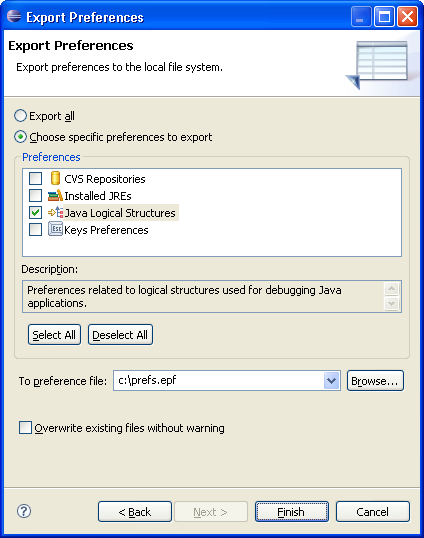
New code formatter options
New options have been added to the
Java > Code Style > Formatter
preference page:
- Comment formatting can now be enabled and disabled
for each comment type individually (Javadoc, block, single line, and header comments).
Block and line comments on the first column can be excluded from indentation.
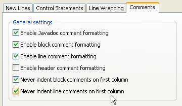
- The number of blank lines that Organize Imports (Ctrl+Shift+O)
inserts between import groups can be configured on the Blank Lines
tab. When formatting, this setting will take precedence over the number
of blank lines to preserve.
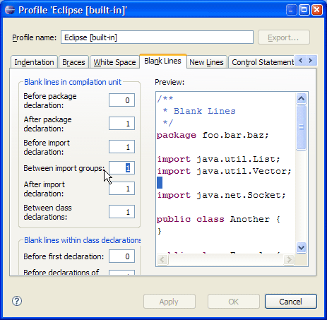
- Binary expressions can now be wrapped before or after the operator.
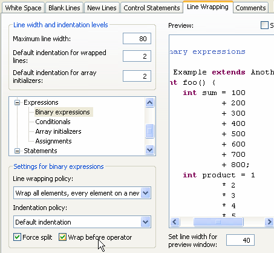
- For return statements, you can now add or remove whitespace before
the parenthesized expression of the throw statement. This option is
available on White Space tab.
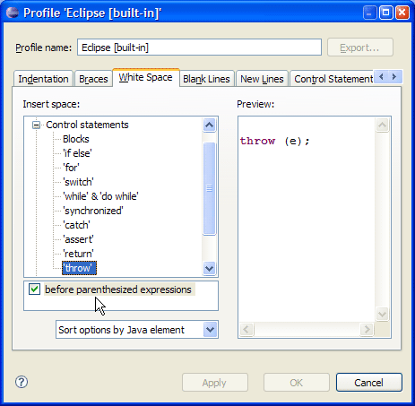
Access rules for execution environments
Access rules are now assigned to each execution environment
based on its profile. For example, rules prevent access to com.sun.*
packages that are not guaranteed to be present at runtime. The rules
are only applied to projects that are bound to execution environments.
Projects bound to a specific JRE still have access to all of their libraries.
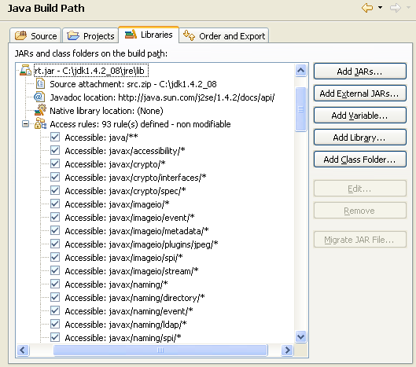
Deprecated and non-modifiable classpath variables
System-defined classpath variables can now
be deprecated and/or declared read-only via the org.eclipse.jdt.core.classpathVariableInitializer extension
point.
Users should replace deprecated classpath variables by better mechanisms such as Libraries.
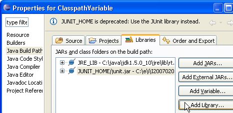
For some variables (e.g. JUNIT_HOME), the Problems view even offers quick fixes to migrate existing projects.
Workspace relative paths for Javadoc location
Workspace relative paths are now accepted as Javadoc locations for archives and class folders:
Runtime type generation
Java 5 annotation processing (APT) was introduced
in Eclipse 3.2, but until now, new types could only be generated by doing
a build. Java 5 Annotation processors can now generate new types on the fly, as
you edit the annotations. This feature is disabled by default, for performance
reasons; to enable it, a processor should include "enableTypeGenerationInEditor"
in the set of strings returned from
AnnotationProcessorFactory.supportedOptions().
Java 6 annotation processing
Eclipse 3.3 fully supports Java 6 annotation processing in the Eclipse Java batch compiler. Java 6 annotation processing is also minimally supported in the IDE, with more support to come in the future.